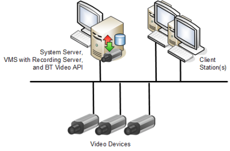
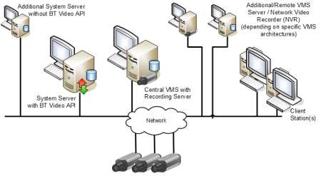

Video Architectures and Limits
Integrating video surveillance into Desigo CC requires two specific software components:
- Video Management System (VMS): Handles the physical connection to video devices and supports video services. This is a distinct software component that must be separately installed and configured to work with Desigo CC.
NOTE: It is possible to use VMS solutions from different providers, including Milestone and Siveillance (contact your nearest sales representative). - Video extension: Installs a component (BT Video API) on the Desigo CC server which acts as an interface to the VMS.
The VMS can be installed on the same computer as the Desigo CC server (local VMS) or on a separate one (networked VMS).

Architectures for small and large installations
The local VMS solution is suitable only for small installations. Networked VMS server is the preferred solution for video systems, and should always be applied to medium and large size installations. For more information see the limits in the table below.
Local and Networked Video Architectures
Video Connectivity Limits | |
|---|---|
Local VMS Deployment | Networked VMS Deployment |
 |  |
The VMS runs on the same computer as the Desigo CC server. | The VMS runs on a separate computer that connects to the Desigo CC server. |
This solution is supported on small installations with a maximum of:
NVRs (Network Video Recorders) can be local or remote:
| This solution can be applied to medium/large installations comprising a maximum of:
NVRs can be local or remote:
|
- Supported Architectures with Additional VMS Servers: To allow remote access to a wide-area vide system, additional VMS servers can be interconnected with the main VMS server that is in turn connected to Desigo CC. However, The architecture with multiple VMS servers in Federated Site Hierarchy is not supported (only the main VMS server is visible from Desigo CC).
NOTE: Support for multi-VMS server and multi-recorder solutions depends on the specific VMS provider. - Supported Architectures with Additional Desigo CC Servers: In a distributed management platform with interconnected Desigo CC servers, only one of the Desigo CC servers is directly connected to the VMS. The other Desigo CC servers instead access video through the connected one.
NOTICE

Recording and storage capacity
The NVRs and hard drive storage required for a specific configuration depend on the number of video cameras, their resolution, and the average recording time. For a correct sizing of the video recording and storage capacity, contact the technical support of the connected VMS.
Recommended Hardware for Video Stations
Computer Hardware Requirements for Video | ||
|---|---|---|
Desigo CC server computer
|
| Example: Typical requirements for Desigo CC server computer that also hosts Milestone / Siveillance VMS
|
Desigo CC client stations that display video streams
| The following requirements apply
| In particular, for the Milestone/Siveillance VMS: |
General Video Application Limits
Thick client stations:
- Video streams: max 36 simultaneous streams per client station. These may be contained in a single pane layout, or subdivided among multiple layouts (for example, 32 in the primary pane, and 4 in the Assisted Treatment video step).
NOTE: The simultaneous use of multiple video layouts (primary, secondary, event treatment) that exceed 36 streams in total may cause excessive CPU and memory usage, slowing down the client station. - CPU usage for video display: 8 simultaneous Full HD video streams or 36 simultaneous 4CIF video streams result in a typical CPU usage <33% and memory usage <830MB.
(Test conducted on PC with I7-3770 3.4 GHz processor and Nvidia Quadro 2000D video card with 1 GB of memory, and with VMS running on a separate PC.)
NOTE: Actual CPU usage depends on the frames per second (fps) and nature of the images (whether "static" or with many moving objects) received from the VMS
Flex client stations:
- Video streams: max 10 simultaneous streams in total for all Flex client stations connected to the system. These may be subdivided in any way, for example, ten Flex clients each with one stream, five Flex clients each with 2 streams.
On Flex clients video streams are displayed as a sequence of 'snapshot' images (resolution 1024 x 768 pixels) with a limited refresh rate: 1 frame/second or less, depending on the type of camera, the performance of the network / VMS recording server, and the number of simultaneous streams.
A Flex station can display images from a camera only in a single-view. There are no multi-camera layouts (2x2, 4x4, and so on) as in the installed client. It is possible to have a single view of one camera in the primary pane, and a single view of another camera in the secondary.
Flex stations do not use monitors and monitor groups to display video images, so there is no interaction with the video displayed on any other station.
Technical Limitations for Siveillance / Milestone VMS integration with Desigo CC
The following constraints apply when the Milestone or Siveillance VMS is integrated with the management platform:
- A Desigo CC server can have only one project enabled for video (see Configure Project Settings for Video). Multiple Desigo CC projects running video on the same machine are not supported.
- A VMS server (possibly with additional interconnected VMS servers) can be connected to:
- Only one project on any given Desigo CC server.
- Only one of the Desigo CC servers in a distributed management platform deployment.
- Up to two separate Desigo CC servers operating independently (that is, not in distribution).
- Starting from Milestone / Siveillance VMS 2019 R2, new ports are used (9000 and 9001):
- In case of a port conflict, you can customize the VMS ports as follows: https://supportcommunity.milestonesys.com/s/article/change-port-numbers-9000-and-9001-used-by-Management-Server-and-Recording-Server?language=en_US
- For more information about the ports used by the VMS, see https://developer.milestonesys.com/s/article/TCPIP-ports-used-in-XProtect-Advanced-VMS-products.
- Windows Server 2019 is supported starting from Milestone / Siveillance VMS version 2019R1.
NOTE: Previous versions of the Milestone / Siveillance VMS (2018R3 and lower) are not compatible with Windows Server 2019. Therefore this operating system cannot be used for a Desigo CC system integrating these VMS providers. This limitation applies even when the VMS server runs on a separate computer.
Known Issues for Milestone and Siveillance VMS:
This section lists the known issues with the current integration of these VMS providers into the management platform.
- The first time a video stream from a camera is selected to display, loading of the stream may take 15 to 25 seconds depending on network and PC performance. Subsequent selections of the video stream will not have this delay.
- Off-line configuration is not supported. You can only fully configure video on a running system with video devices connected.
- Each Desigo CC project restart causes the video connection to stop. Operators must issue a new connect command from a client station after restarting the system project.
Video Support on Windows App Clients
The use of video on Windows App clients (formerly Click-Once clients) requires the following:
- On each web station, run the setup program MilestoneProviderInstaller.msi from the Prerequisites\BT_Video_API folder of the installation files.
NOTE: This setup is included in the Desigo CC client setup. Therefore, you do not need to perform this step on installed clients.
Video License Requirements
The Video application requires the following licenses:
- Base Video License (sbt_gms_vid_base)
- Number of embedded cameras (sbt_gms_vid_embed_src), handled by management-system clients only.
OR
Number of external cameras (sbt_gms_vid_extern_src), also handled by VMS clients - Number of monitors (sbt_gms_vid_sinks)
NOTE: Cameras that are disabled in the VMS do not count toward the license totals.
NOTICE
Disabled cameras performance
Cameras disabled in the VMS are still acquired into the Desigo CC Video Configurator tab. In deployments with a high number of disabled cameras, this may impact on system performance, resulting in slower alignment or refresh.